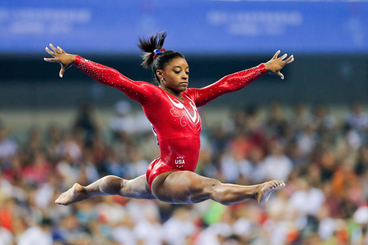

Gymnastics AT OLYMPICS
|  |
GYMNASTICS EVENTS HAVE BEEN CONTESTED AT EVERY SUMMER OLYMPIC GAMES SINCE THE BIRTH OF THE MODERN OLYMPIC MOVEMENT AT THE 1896 SUMMER OLYMPICS IN ATHENS. FOR 32 YEARS, ONLY MEN WERE ALLOWED TO COMPETE.BEGINNING AT THE 1928 SUMMER OLYMPICS IN AMSTERDAM, WOMEN WERE ALLOWED TO COMPETE IN ARTISTIC GYMNASTICS EVENTS AS WELL. RHYTHMIC GYMNASTICS EVENTS WERE INTRODUCED AT THE 1984 SUMMER OLYMPICS IN LOS ANGELES, AND TRAMPOLINE EVENTS WERE ADDED AT THE 2000 SUMMER OLYMPICS IN SYDNEY.